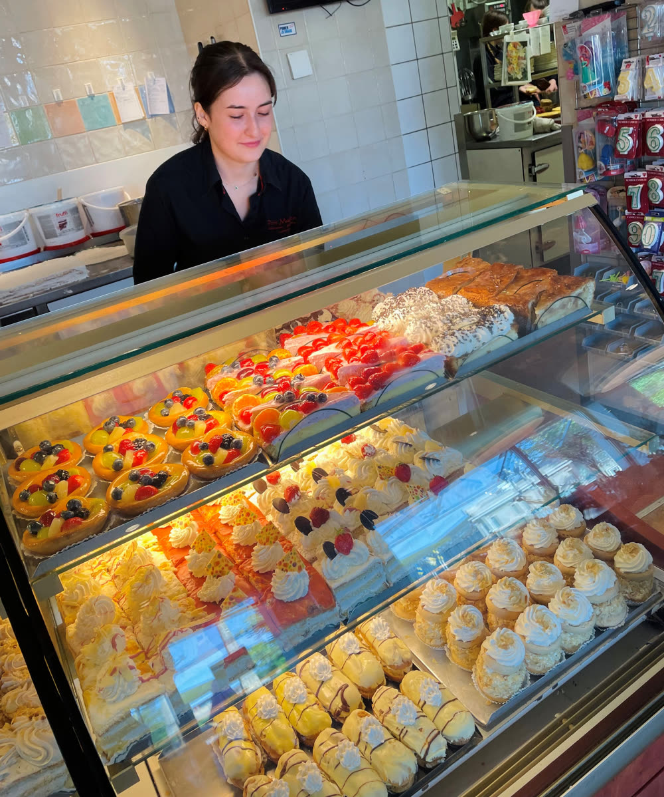
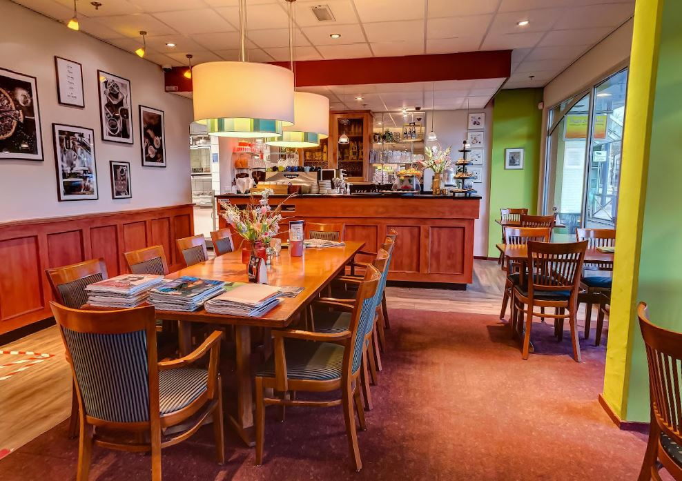
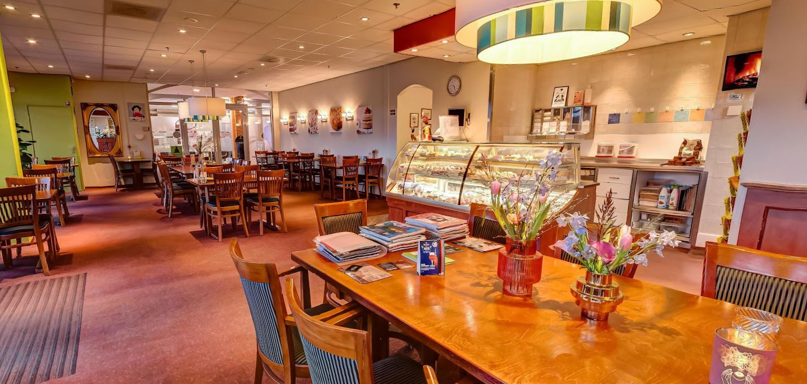
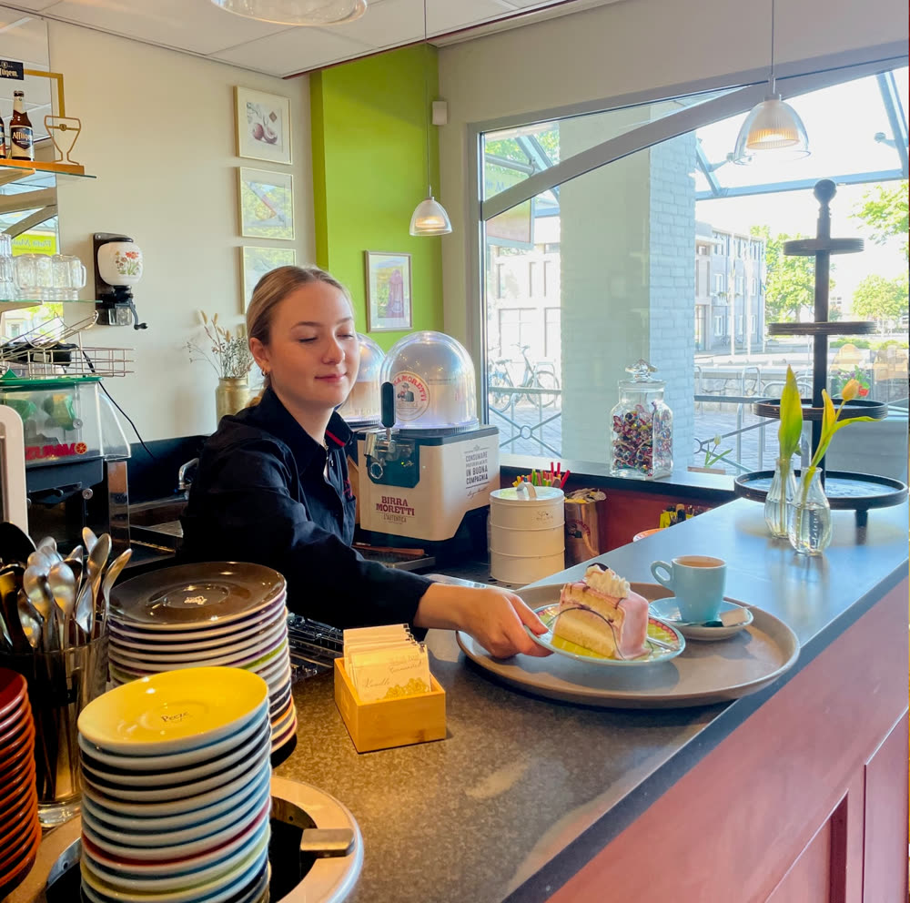
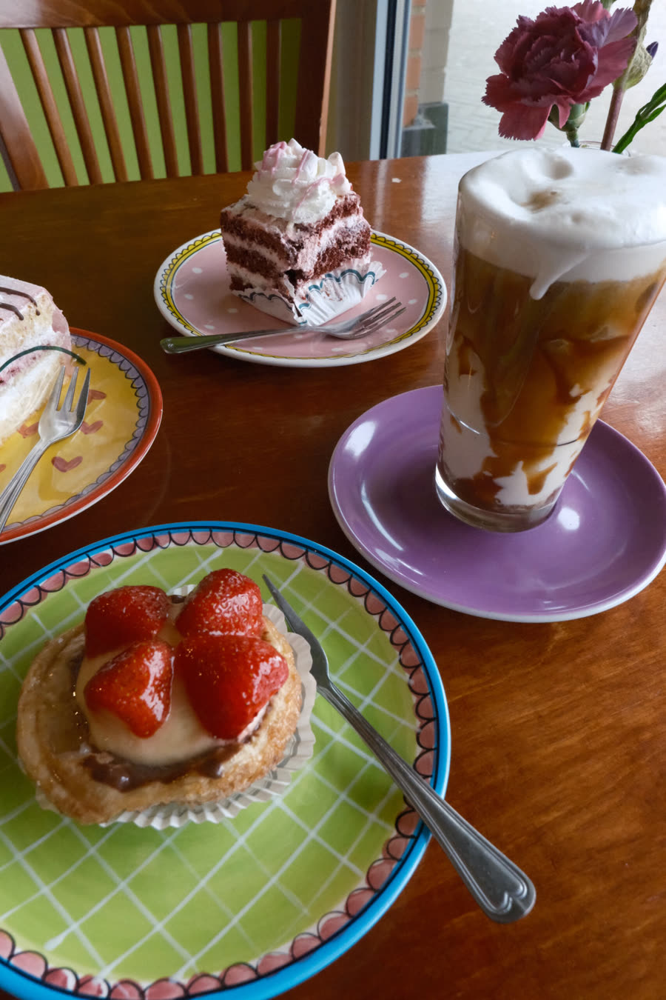
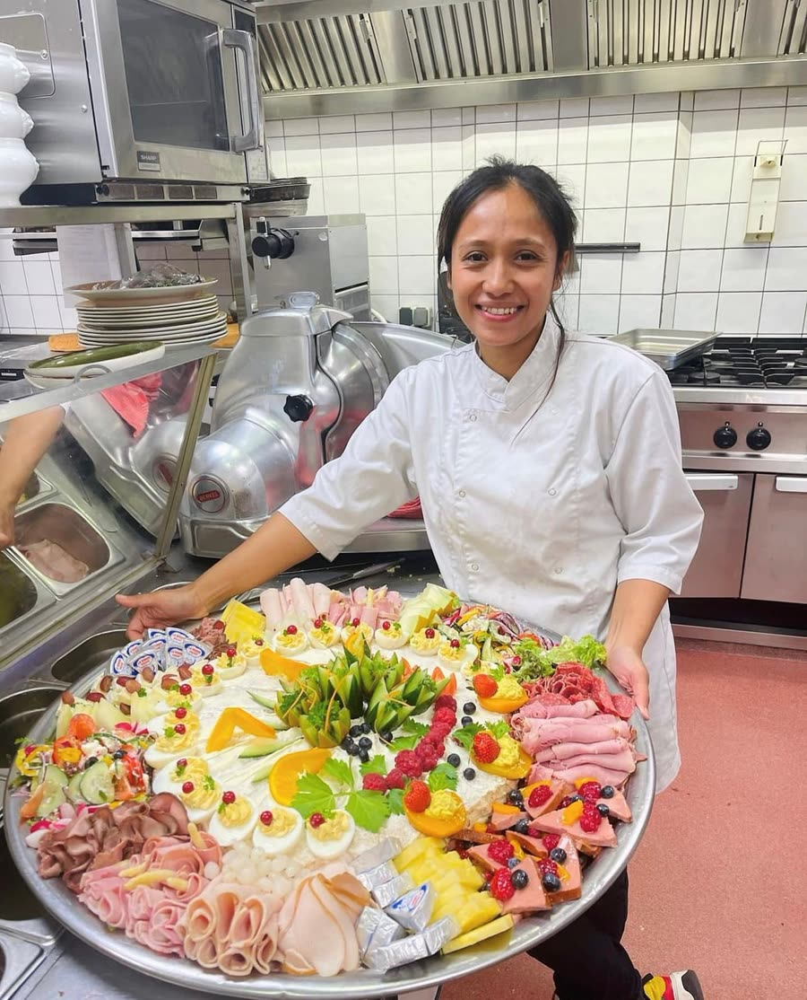

Sinterklaasaanbieding
- Sinterklaastaart, 6 personen€ 12,50
- Bonbons€ 5,50
Grotere taarten zijn ook mogelijk.
Promenade 11, Malden
Waar smaak, gezelligheid en ambacht samenkomen, midden in het hart van Malden. Lunchroom, patisserie en cateringzaak in het winkelcentrum: verse smaken, huisgemaakte lekkernijen en pure gastvrijheid.

Gelegen in het winkelcentrum van Malden heten we je van harte welkom in onze lunchroom, patisserie en cateringzaak. Stap binnen in onze wereld van verse smaken, huisgemaakte lekkernijen en pure gastvrijheid.
Bij Petit Malden geloven we dat genieten in de kleine heerlijkheden zit: een perfect kopje koffie met een heerlijk koekje, een lekkere lunch, een verfijnd gebakje uit onze patisserie of een feesttafel vol met zorg bereide cateringgerechten.
Of je nu langskomt tijdens het winkelen, een momentje voor jezelf zoekt, gezellig wilt bijpraten met vrienden óf op zoek bent naar een verzorgde catering voor een speciale gelegenheid: wij zorgen ervoor dat je je welkom voelt vanaf het eerste moment.
Ontdek ons assortiment


Zin in iets lekkers? Bij ons ben je aan het juiste adres voor vers belegde broodjes, lekkere croissants, huisgemaakte gebakjes en een ruime keuze aan warme en koude dranken. Wij werken met de kwaliteitskoffiebonen en ingrediënten van Peeze, met zorg gezet en met liefde geserveerd.
Neem plaats binnen en geniet van de warme uitstraling, of schuif bij mooi weer aan op ons gezellige terras buiten. Onze lunchroom staat bekend om de gemoedelijke, huiselijke sfeer.
Deze gerechten komen uit hun allergenenlijst. Prijzen staan niet op hun site; die vul je als eigenaar zelf aan.
Allergenenlijst lunchroom (pdf) · Allergenenlijst gebak (pdf)

Naast onze lekkernijen voor in de lunchroom kun je bij ons ook terecht voor vers gemaakt gebak om mee te nemen of om uit te pakken. Thuis, op het werk of onderweg: een momentje voor jezelf.
€ 2,00 per stuk
Ons assortiment bestaat uit ruim 25 zeer lekkere gebakjes. Bekijk in de winkel het meest actuele assortiment. Op zaterdag is het assortiment cakesoorten uitgebreid.
Vier je een verjaardag of een andere speciale gebeurtenis? Wij maken met liefde traditionele slagroomtaarten, schuimtaarten, fototaarten, themataarten en nog veel meer. Laat ons weten wat je in gedachten hebt: we denken graag met je mee voor een persoonlijke en smakelijke creatie.
Bestel een taartAlles wat je bij ons kunt bestellen, van taarten en vlaaien tot salades, hapjes en broodjes.
Jamsmaken: aardbeien, appel, kersen, abrikozen, bosvruchten, rum/rozijnen of framboos.
Snijden: + € 0,50
Ons assortiment bestaat uit ruim 25 zeer lekkere gebakjes. Bekijk in de winkel het meest actuele assortiment. Op zaterdag is ons assortiment cakesoorten uitgebreid, zie dit in de winkel.
De ultieme verjaardagstaart voor jong en oud. Dankzij de nieuwste printtechnieken met eetbare inkt maken wij alle afbeeldingen op elke taart: een foto, een logo of een tekening. Niets is ons te gek.
Graag 2-3 werkdagen van tevoren bestellen. De fototaarten bevatten jam en banketbakkersroom en zijn rechthoekig, let hierop bij het aanleveren van de foto. Foto’s worden na bestelling vrijwel direct afgedrukt; voor annuleren kunnen daarom kosten in rekening worden gebracht, ongeacht de besteltijd.
De leukste thema’s voor ieder wat wils. De meest actuele mogelijkheden vind je in de winkel.
Speciale wensen voor versiering of kleuren? Neem telefonisch contact op, dan overleggen we de mogelijkheden. Themataarten bestel je 5 werkdagen van tevoren; bij een te groot aantal bestellingen kan het zijn dat het niet meer lukt, ook als je op tijd bestelt. De themataarten bevatten jam en banketbakkersroom.
Op zoek naar een unieke taart? Een cijfertaart is leuk voor jong en oud: per cijfer voor ongeveer 8-10 personen, versierd met een chocolaatje en een vruchtje.
De cijfertaart bevat standaard geen jam of gele room. In een leuk kleurtje of met extra versiering? Vraag om de meerprijs.
Een kleine op komst en een leuke taart nodig? Of wil je het geslacht bekendmaken? Het kan allemaal: de heerlijkste slagroomtaarten in roze of blauw, of alleen de binnenkant in de juiste kleur. Aantal personen naar keuze.
Een klein gebakje met een grote smaak, bedrukt met foto of logo. Een petit four blijft een welkome lekkernij: makkelijk te presenteren en extra opvallend met je eigen opdruk. Kies je eigen afbeelding of ga voor een mooie krul.
De petit fours hebben een standaardsmaak: een crèmevulling met een laagje frambozenjam, omhuld met fondant. Voor het annuleren van petit fours kunnen kosten in rekening worden gebracht.
Salades en hapjes zijn doordeweeks vanaf 11.00 uur af te halen, op zaterdag vanaf 13.00 uur. Bij allergieën: vraag het ons.
De ingrediënten voor onze salades worden met zorg samengesteld en dagvers verwerkt. Voor een optimale kwaliteit adviseren wij een bewaartemperatuur van 2-6 °C.
Diverse fijne hapjes, € 0,75 per stuk (minimaal 25 stuks).
Als bedrijf op zoek naar een lekkere lunch? Ook bij ons zijn afhaalbroodjes te bestellen. Diverse broodjes, vanaf € 3,75 per stuk.
Wij verzorgen voor je feest ook koude en warme buffetten. Hiervoor maken we graag een afspraak om je buffet te bespreken. Vraag naar onze complete partyservice.

Wil je je gasten eens écht verwennen? Ontdek dan de cateringmogelijkheden van Petit Malden. In ons assortiment vind je een heerlijke selectie van:
Liever iets geheel op maat? In samenspraak stellen we graag een persoonlijk menu samen dat perfect aansluit bij je wensen en de sfeer van je gelegenheid. Met Petit Malden maak je van elk moment iets speciaals.
Bestellen kan eenvoudig online. Voor het ophalen van de bestelling vragen we je een kopie van de bestelling mee te nemen, op papier of op je telefoon. We bezorgen helaas niet.
Lukt het formulier niet? Bestel dan per e-mail via info@petitmalden.nl of telefonisch via 024 358 05 64.
Grotere taarten zijn ook mogelijk.
Koningsdag en Pasen zijn we gesloten.
Gebak afmaken en taartjes opmaken, meehelpen in de keuken en klanten helpen met gebak en meegeven. We zoeken iemand die enthousiast, klantvriendelijk en gemotiveerd is, vanaf 16 jaar.
Interesse? Neem contact op via info@petitmalden.nl of 024 358 05 64.
Op feestdagen kunnen de tijden afwijken, zie hierboven.
Telefoon: 024 358 05 64
E-mail: info@petitmalden.nl
Een kopje koffie, een taartje, een bestelling of een vraag over catering: bel of mail gerust.